Icons
Deze iconen worden in onze Funda site gebruikt.
Het hartje en de profielfoto wordt in de navigatie gebruikt.
Code iconen:
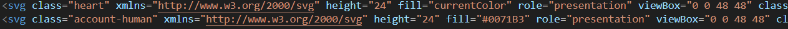Het gevulde hartje geeft aan dat een bepaalde huis in de favorietenlijst staat.
Code icoon:
 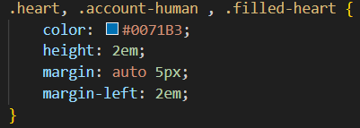
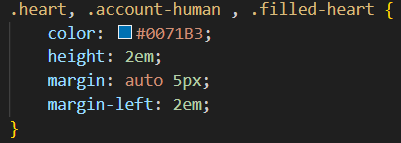
In de footer staan deze vijf iconen die naar de social media platforms verwijzen.
Code iconen:
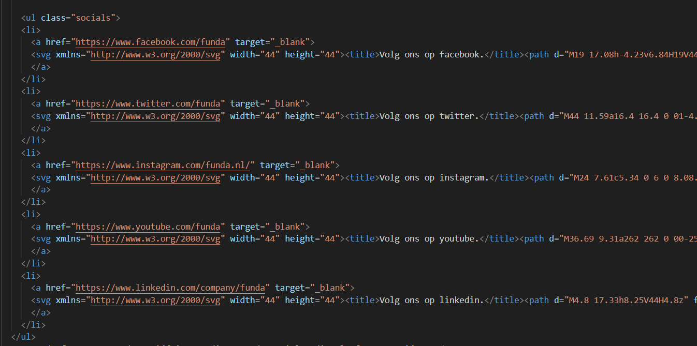 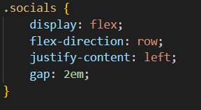Buttons
Ook hebben we in onze Funda website een aantal buttons gebruikt.
Deze buttons zijn om de darkmode en contrastmode in te schakelen.
Code buttons:
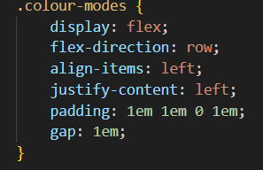 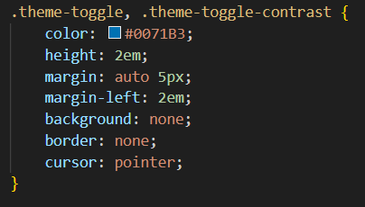 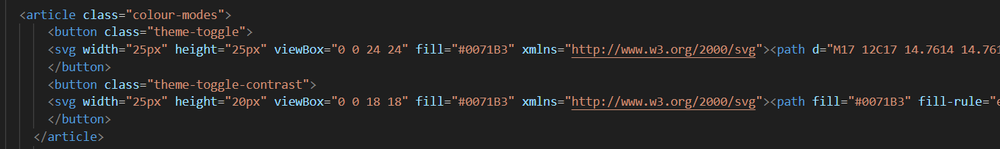Dit is de button van de zoekbalk.
Code button:
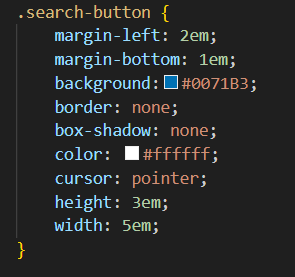 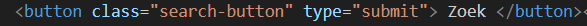Deze drie buttons linken naar de profielen van de andere bijdragers aan de lijst.
Code buttons:
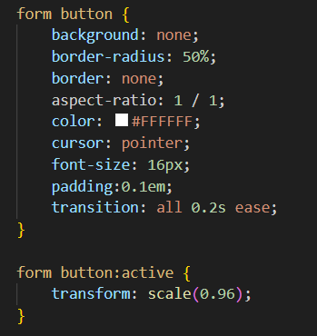 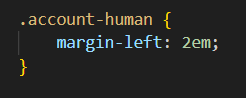 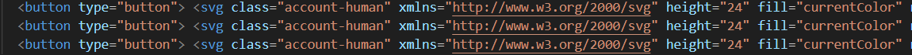Als op deze button wordt geklikt, gaat er een pop-up openen. Je kan dan bijdrager toevoegen.
Code button:
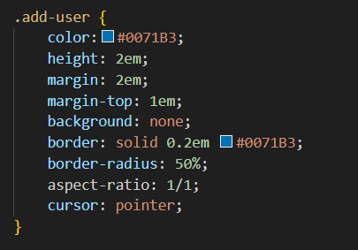 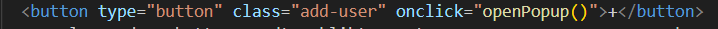Deze button bevestigt het toevoegen van een andere bijdrager.
Code button:
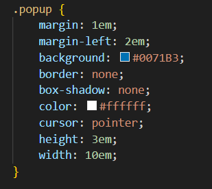 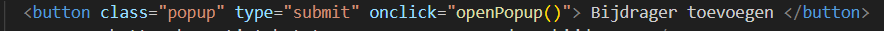Met deze button sluit je de pop-up.
Code button:
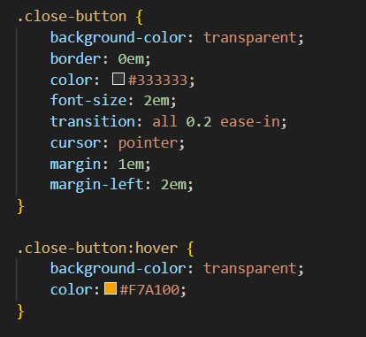 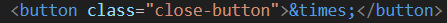Door deze button te klikken, kun je een comment plaatsen.
Code button:
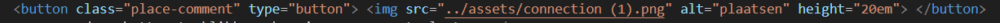 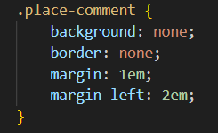